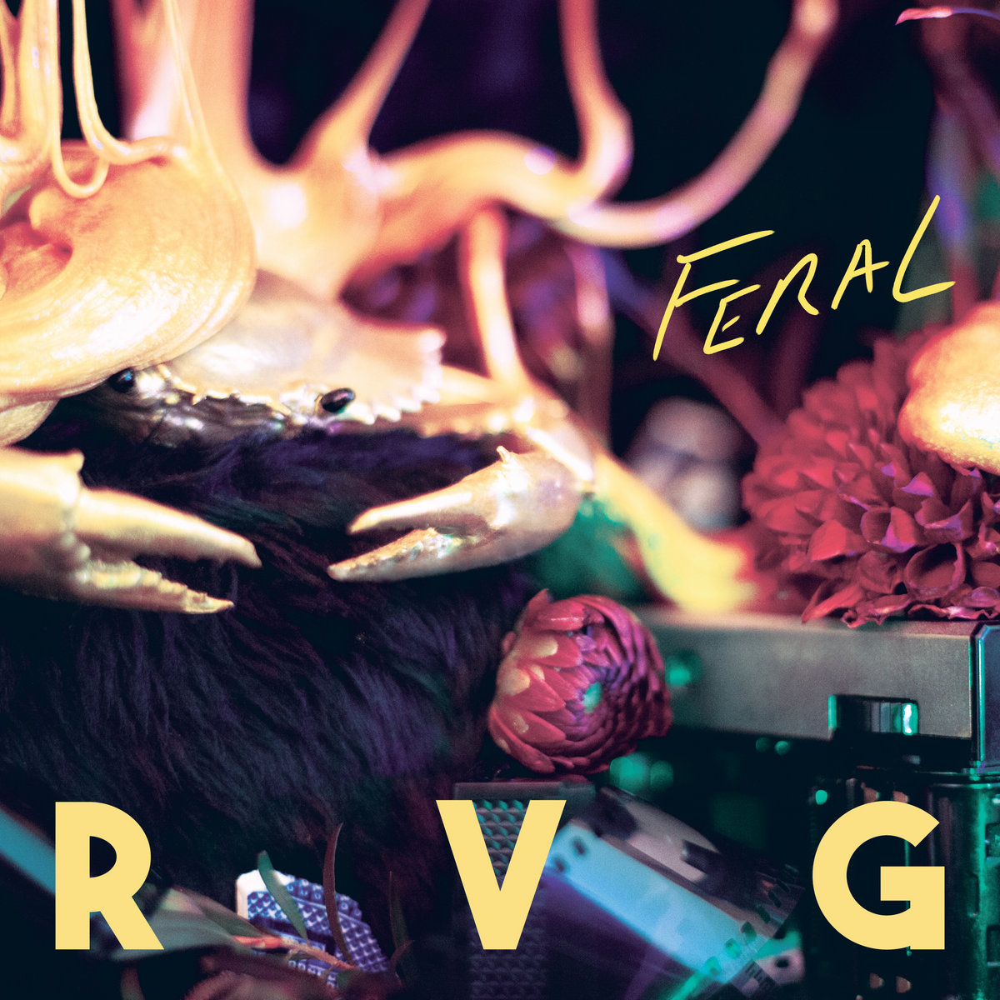
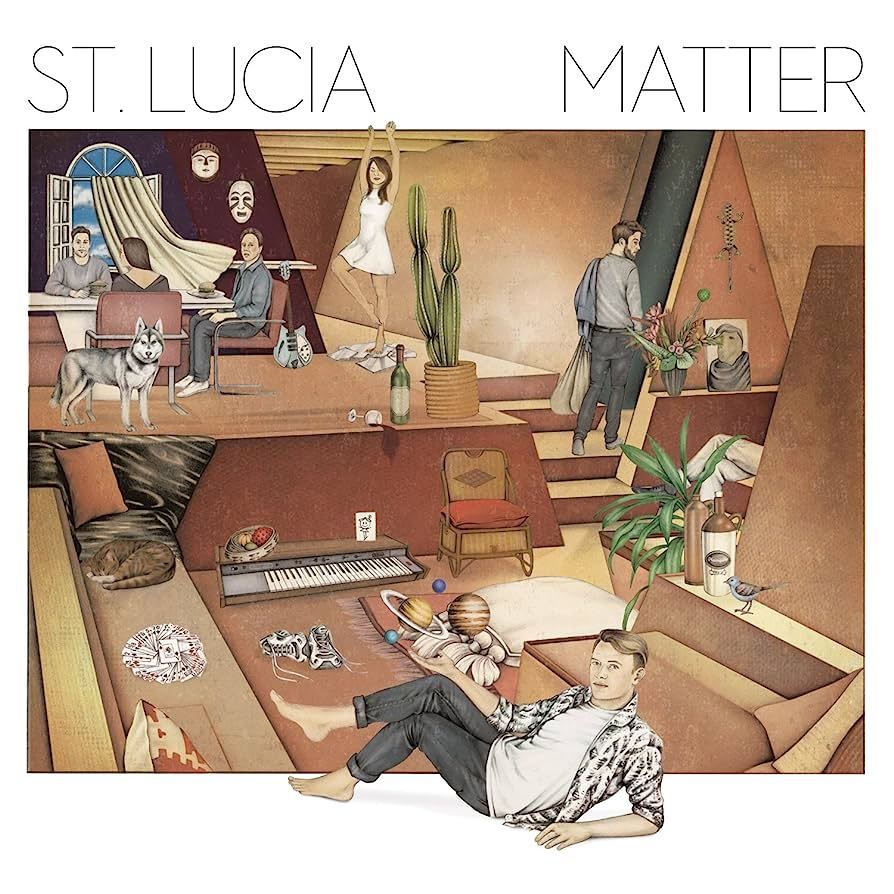
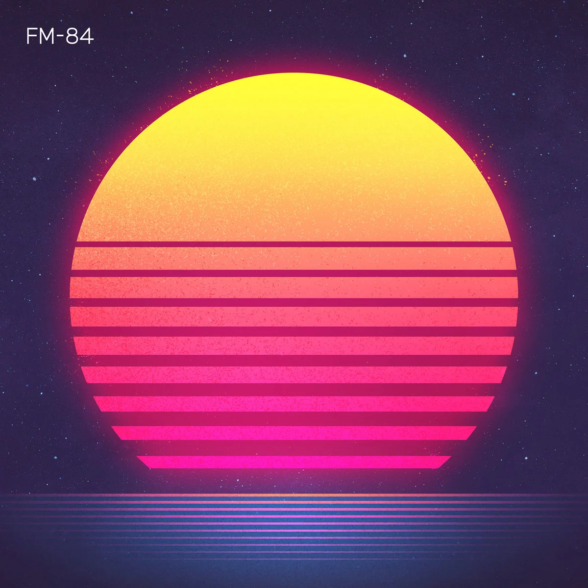

Vibra de los 80s
Haz click sobre la imagen para entrar al álbum en Spotify.

Álbum: Alone at Prom
Artista: Tory Lanez
"Alone at Prom" es un álbum íntimo y melancólico que captura las emociones y las experiencias de la soledad en un entorno festivo y romántico.

Álbum: Future Nostalgia
Artista: Dua Lipa
"Future Nostalgia" es un álbum energético y sofisticado que fusiona elementos de la música disco y el pop contemporáneo, creando un sonido fresco y nostálgico a la vez.

Álbum: Shadow Work
Artista: YATTE
"Shadow Work" de YATTE es un álbum introspectivo y emocional que explora las luchas internas y los desafíos personales a través de una mezcla ecléctica de géneros musicales.

Álbum: They Call Me Disco
Artista: Ric Wilson - Terrence Martin
"They Call Me Disco" es un álbum lleno de ritmos contagiosos y melodías pegajosas que rinde homenaje a la era dorada de la música disco con un toque moderno y fresco.

Álbum: Feral
Artista: RVG
"Feral" de RVG es un álbum enérgico y visceral que combina letras introspectivas con guitarras potentes, entregando un sonido post-punk distintivo y lleno de emoción.

Álbum: Parallel Play
Artista: Panama Wedding
"Parallel Play" de Panama Wedding es un álbum lleno de melodías luminosas y letras evocadoras, que invita a sumergirse en un viaje emocional a través de su pop alternativo y electrónico.

Álbum: Matter
Artista: St. Lucia
"Matter" de St. Lucia es un álbum lleno de sintetizadores brillantes y ritmos bailables, que fusiona el pop, el indie y la música electrónica en una experiencia sonora contagiosa y emocionante.

Álbum: Atlas
Artista: FM-84
"Atlas" de FM-84 es un álbum nostálgico y atmosférico que captura la esencia del synthwave, transportando al oyente a paisajes sonoros de los años 80 con una sensibilidad contemporánea.

Álbum: Synth City
Artista: Dana Jean Phoenix
"Synth City" de Dana Jean Phoenix es un álbum lleno de energía y nostalgia que fusiona hábilmente el synthwave y el pop, transportando a los oyentes a un paisaje urbano futurista y vibrante.